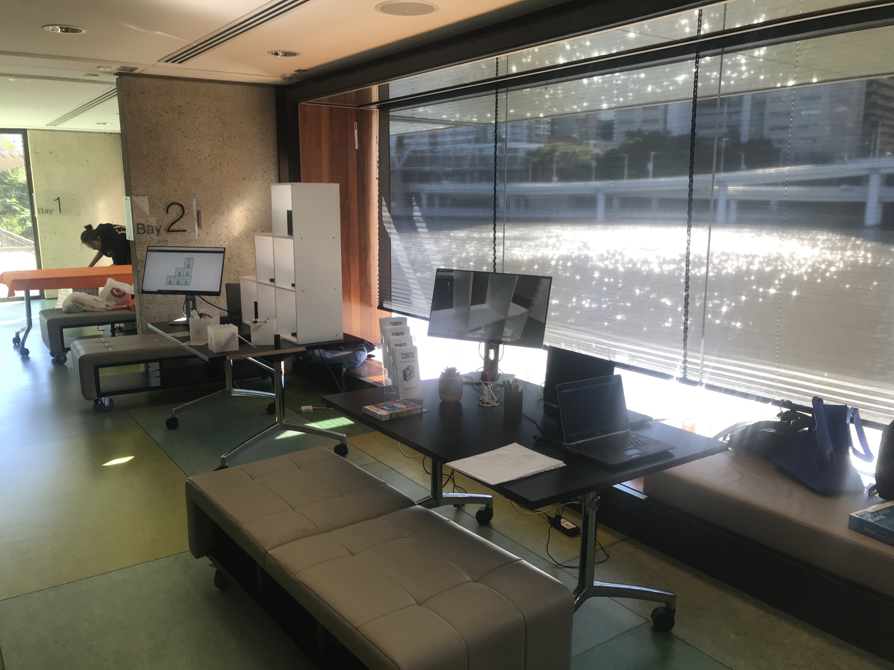
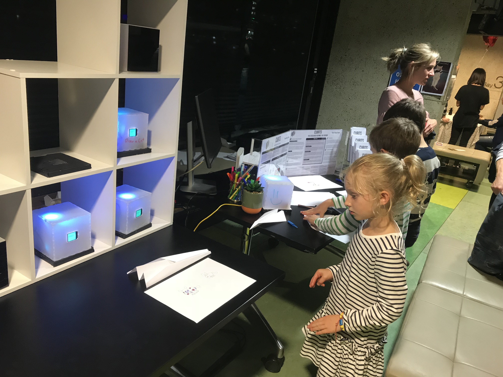

Evaluation
Method
The UQ Interaction Design Exhibit served as a way to showcase Cubits to a broader audience. The trouble with the Interaction Design Exhibit is that the environment is not suitable as a representation of the typical context Cubits would be placed. A work environment is quiet, calm, and formal. It requires that employees build professional relationships to ensure a healthy working environment. An exhibit environment is loud, energetic and mostly informal. Most exhibit visitors will use the product for a short period before moving on to the next installation. A useful aspect of the exhibit is that many visitors are those who work on industry projects, so their insights on the problem space were very intriguing.
We needed to adjust the product in a way that we could draw feedback for it but still apply our findings to the work environment. I proposed two ways to get productive feedback from the exhibits. The first was so have tasks that were quicker and more suited to the visitors of the exhibit. Instead of typical work tasks such as "Fill in timesheet", I made tasks such as "Make a paper plane" or "Complete a crossword". General tasks mean we can engage visitors to use the product thoroughly. Since an average person or child can complete the task, it means that we can measure if users collaborate with one another effectively.
But how do we measure overall impressions of Cubits? Do do this, I suggested that we make one of the tasks "Leave feedback". This task will require that users fill in a quick questionnaire gauging their feelings of the product as a whole. The survey would ask questions on whether they felt more motivated to complete the task and how, as well as if users felt more of a need to help other people out.
Just as important as asking visitors how they feel about the product is observing how people use a product with the perspective of the broader context and underlying research questions. I took notes on how exhibit visitors used Cubits when left to play with them. I took notes on how they keep track of their tasks while completing them, and how other people offer assistance to those doing tasks. These observations served as a valuable measurement of the success of the product.
Results
Cubits received positive informal comments by those passing by. Comments ranged from being "innovative" to "useful for daughter". One visitor even encouraged to look into production costs to mass producing Cubits for real use. Reactions were positive for the emotional design incorporated into the product. Visitors said that they were "cute" and was "a better way to tell the time limit". Others said that it was satisfying to see the cubes go to sleep once users complete more tasks.
Visitors were inclined to do a task to see how they fare when up against a time limit to complete their work. Participants ranged from kids right up to leaders of software companies. Visitors reacted strongly when their task cube colours turned orange to red. The time limit and the social cues meant that users were more inclined to complete the task and become more efficient with their workflow.
Survey feedback collected in the exhibit was superficial. Because most visitors only had around one to two minutes to spare, they felt that it was cumbersome to fill out a form. Short attention spans were coupled with the fact that the feedback form required that you complete one of the other tasks before filling in the survey with their overall impressions. We collected four fully completed feedback forms in total. All four of them stated that cubits helped them to become more productive. Only two of the four reported that they collaborated with others to get their work done faster.
Very little collaboration between users who do a task and their friends. The outsiders believe that they own the task and that they should be left alone. Bugs with the RFID reader and the TFT screens meant that we could not test some interactions.
Reflection
Overall, I believe that the product has succeeded in some regards. It has succeeded in proving that there is more potential to get work done with the help of public goal monitoring and emotional design. It has not been successful in regards to encouraging collaboration. We would have to do more work in this space before we can declare that Cubits helps users to collaborate and promote a healthy work culture.
Emotional design is something that is hard to measure quantitatively. That being said, users generally responded positively to the emotional design techniques as evidenced by the survey and observation results.
Our findings support Harkin's study on how goal monitoring increases motivation. This time, it has been applied to an industry context. I believe this has great potential and I hope that this is not the last time goal monitoring in the workplace is explored.